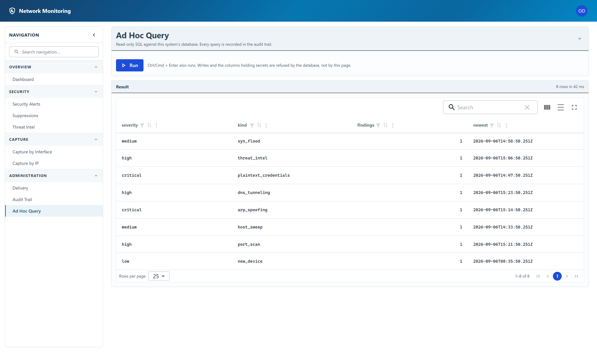

Ad hoc query
SQL against this system's own database, for the question no screen answers.

Running a query
- Type SQL into the editor.
- Click Run, or press Ctrl+Enter (Cmd+Enter on a Mac).
- Results appear in the standard table — sortable, searchable, paged — with the row count and how long the query took.
What it will and will not do
The console is off unless an administrator has switched it on in the server's configuration, and it is read-only unless a second setting has also been switched on. Those two are separate on purpose: an installation that never asked for a console that can write does not get one by upgrading.
The important part is where those limits are enforced. They are database privileges, granted to a dedicated role, not checks in this page:
- Writes are refused by the database in read-only mode. There is no statement you can phrase that gets around it.
- The columns holding secrets — the webhook URL, the SMTP password, the OAuth2 client secret and refresh token — are not granted to the console's role at all. Selecting them fails whatever mode it is in.
- The audit trail cannot be written or rewritten from here, in either mode. A console whose own use could be erased is a console whose use cannot be investigated.
Every query you run is itself recorded in the audit trail, including the SQL.
Administrators only, and only where the server has the console enabled. Whether it can write is a second, separate server setting — neither can be turned on from inside the application.